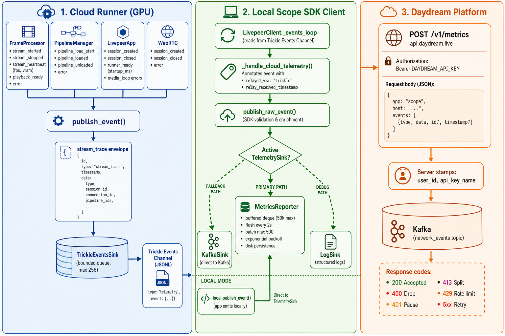

How Daydream Scope reports telemetry from the cloud runner, through the local SDK client, to the remote api.daydream.live/v1/metrics endpoint for publishing into Kafka.

[Diagram image not found — see docs/scope_metrics_data_flow.png]';">Scope emits structured telemetry events (called stream_trace envelopes) from multiple components during video generation sessions. In cloud mode, the GPU runner cannot reach Kafka directly, so events are relayed over the Livepeer trickle protocol to the local SDK client, which acts as the egress point. The MetricsReporter buffers and reliably forwards these events via HTTP POST to the Daydream platform, which stamps identity and publishes them to the network_events Kafka topic.
Four components on the runner emit telemetry via the centralized publish_event() function:
| Component | Event Types | Key Metadata |
|---|---|---|
| FrameProcessor | stream_started stream_stopped stream_heartbeat playback_ready error | fps_in/out, vram_allocated_mb, vram_reserved_mb, frames_in/out, elapsed_ms, pipeline_fps |
| PipelineManager | pipeline_load_start pipeline_loaded pipeline_unloaded error | load_time_ms, pipeline_id, model info, load_params |
| LivepeerApp | session_created session_closed runner_ready error | startup_ms, gpu_type, region, error_type (media_input/output_loop_failed) |
| WebRTC | session_created session_closed error | connection_id, mode (local/relay), offer/answer failures |
Every publish_event() call stamps a stream_trace envelope via build_event_envelope():
{
"id": "uuid-v4",
"type": "stream_trace",
"timestamp": "1717200000000",
"data": {
"type": "stream_heartbeat",
"client_source": "scope",
"timestamp": "1717200000000",
"session_id": "sess-abc",
"connection_id": "conn-xyz",
"pipeline_ids": ["wan-2.1"],
"user_id": "usr_123",
"fps_in": 30.0,
"fps_out": 28.5,
"vram_allocated_mb": 4096.2,
...
}
}The runner installs a TrickleEventsSink as the active TelemetrySink. This routes all publish_event() calls through a bounded async queue (max 256 events, drop-oldest on overflow) that drains onto the trickle events JSONL channel:
// Written to the trickle events channel
{"type": "telemetry", "event": { /* full stream_trace envelope */ }}The sink is non-blocking and thread-safe — it never stalls the media or control paths. Events are best-effort; under extreme pressure the oldest are dropped.
On the local Scope client, LivepeerClient._events_loop reads from the trickle events channel. When it encounters a "telemetry" message:
_handle_cloud_telemetry() annotates the envelope with relayed_via: "trickle" and relay_received_timestamppublish_raw_event() dispatches the envelope verbatim (preserving the runner's original id/timestamp) to the active TelemetrySinkinstall_default_egress_sink() selects the egress backend in this order:
SCOPE_TELEMETRY_LOG_SINK=1 (debug/development)SCOPE_CLOUD_API_KEY is set and reporter is running (preferred production path)KAFKA_BOOTSTRAP_SERVERS is configured (direct-to-Kafka fallback)When running without a cloud runner, publish_event() calls go directly to the active sink — no trickle relay involved. The same MetricsReporter handles egress.
The MetricsReporter implements the TelemetrySink protocol and buffers events for reliable delivery to POST /v1/metrics:
POST https://api.daydream.live/v1/metrics
Authorization: Bearer <DAYDREAM_API_KEY>
Content-Type: application/json
{
"app": "scope",
"host": "studio-01.local",
"events": [
{"type": "stream_heartbeat", "id": "evt-1", "timestamp": "...", "data": {...}},
{"type": "pipeline_loaded", "id": "evt-2", "timestamp": "...", "data": {...}},
...
]
}| Env Variable | Default | Description |
|---|---|---|
SCOPE_CLOUD_API_KEY | — | Bearer token (required to enable) |
DAYDREAM_METRICS_URL | https://api.daydream.monster/v1/metrics | Endpoint URL |
SCOPE_METRICS_FLUSH_INTERVAL_MS | 2000 | Flush interval (ms) |
SCOPE_METRICS_MAX_BATCH | 500 | Max events per POST |
SCOPE_METRICS_MAX_BUFFER | 50000 | Max buffered events |
SCOPE_METRICS_BUFFER_PATH | ~/.daydream-scope/metrics_buffer.jsonl | Disk persistence path |
SCOPE_METRICS_ENABLED | auto (on if key present) | Explicit on/off |
Drop batch from buffer, reset backoff to 1s. Events are durably in Kafka.
Log error and drop the batch. Retrying won't help.
Pause sending until API key is refreshed. Events remain buffered.
Halve batch size and retry immediately. Events are not lost.
Back off for 60s (rate limit window). Events remain buffered.
Requeue batch, exponential backoff (1s → 2s → 4s → … → 60s max).
On shutdown (or crash recovery at next startup), unflushed events are persisted to a JSONL file at ~/.daydream-scope/metrics_buffer.jsonl. On next start, the reporter loads this file back into its in-memory buffer and resumes sending — no events are lost across restarts.
The /v1/metrics endpoint on api.daydream.live:
user_id + api_key_nametype + data)data with the authenticated user_id and api_key_name (server is source of truth)network_events Kafka topic with this envelope:{
"id": "evt-abc-001",
"type": "stream_heartbeat",
"sender": {"type": "app", "id": "scope", "host": "studio-01.local"},
"timestamp": "1717200000000",
"data": {
"fps_in": 30.0,
"fps_out": 28.5,
"vram_allocated_mb": 4096.2,
"user_id": "usr_abc",
"api_key_name": "my-key"
}
}The Kafka message key is data.user_id, providing partition affinity per user for downstream consumers.
| Limit | Value |
|---|---|
| Max batch size | 500 events/request |
| Max body size | 1 MiB |
| Rate limit | 120 requests/minute/key |
| Event type max length | 128 chars |
| Event id max length | 128 chars |
| Runner queue capacity | 256 events (drop-oldest) |
| Client buffer capacity | 50,000 events (drop-oldest) |